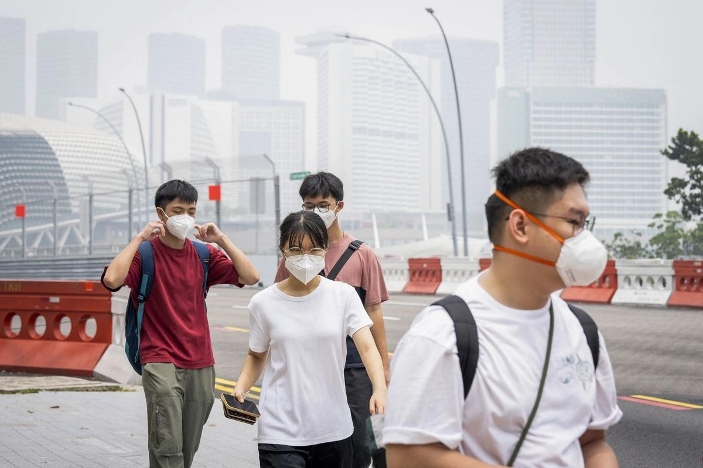

FAKTACEK FAKTA TERBARU
Cek berita lainnyaDATA FAKTUAL
Lihat selengkapnyaFAKTA SEJARAH
Lihat selengkapnyaCARA SEDERHANA CEK FAKTA
Periksa sumbernya
Pastikan informasi berasal dari media atau lembaga yang jelas dan tepercaya.
Cari konteks lengkap
Baca isi berita, bukan hanya judul, potongan gambar, atau pesan berantai.
Cek tanggal dan bukti
Bandingkan dengan sumber lain dan pastikan informasi masih relevan.